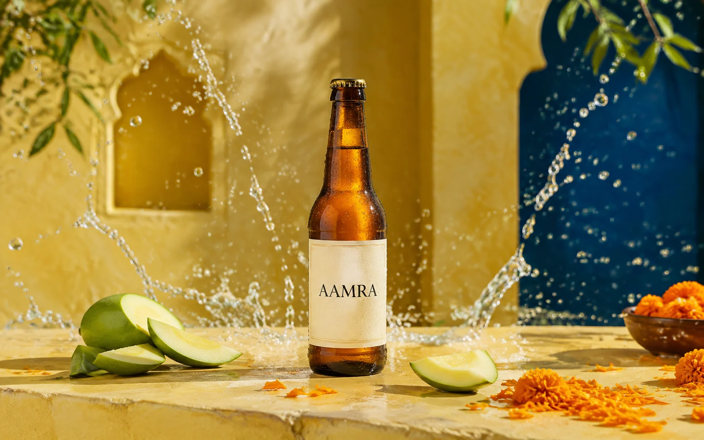
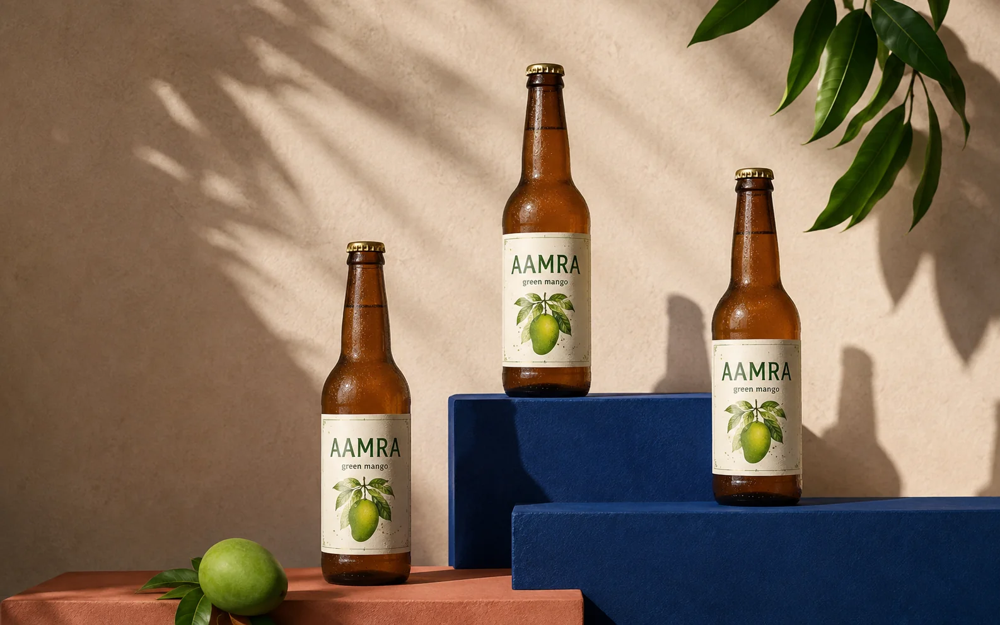
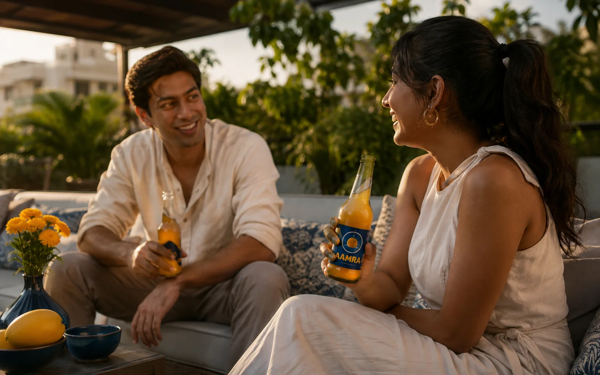

A sparkling green-mango soda positioned as the sharp, joyful relief of the first rain after a long Indian summer.

ROLEConcept + campaign direction
FORMATLaunch campaign
AUDIENCEUrban social drinkers
STATUSSelf-initiated simulation
THE POSITIONING
Summer sharpness. Monsoon release.
I built AAMRA around the sensory contrast inside raw mango: sour, bright and deeply familiar. Instead of presenting it as nostalgic packaging, I paired mango yellow with architectural cobalt and energetic water movement.
The campaign line, “Taste the First Rain,” connects the drink to a universally recognizable Indian seasonal moment while leaving room for product, social and event activations.

01 / IDENTITY IN USE
Give a familiar flavour a modern posture.
The bottle system uses an amber silhouette and botanical illustration for craft, while the bold display blocks keep it contemporary. Repetition proves the identity can work as a family rather than one hero image.
Colour logicMango yellow carries flavour; cobalt creates refreshment and contrast.
Retail roleThe clean vertical label remains recognizable at shelf distance.

02 / SOCIAL WORLD
Move from product desire to shared ritual.
The terrace frame locates the drink in a believable occasion: the heat has softened, friends have stayed longer and the first breeze has arrived. The campaign becomes social without relying on a crowded party cliché.
Channel useHeroless video, social cut-downs and launch-event imagery.
Production noteNatural late-afternoon light protects the campaign’s warm, tactile character.
WHAT I LEARNED
A culturally specific idea can still feel completely contemporary.
The strongest system came from holding one contrast consistently: heat and rain, sharpness and relief, yellow and blue. It gave every asset a shared decision rule and made the campaign easier to extend.